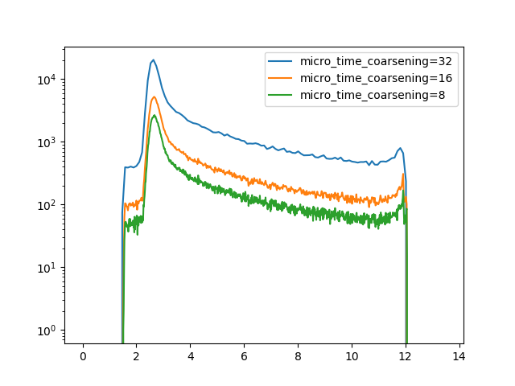

Note
Click here to download the full example code
Micro time histograms¶

import tttrlib
import pylab as p
data = tttrlib.TTTR('../../test/data/bh/bh_spc132.spc', 'SPC-130')
h, t = data.microtime_histogram(
micro_time_coarsening=32
)
p.semilogy(t, h, label="micro_time_coarsening=32")
h, t = data.microtime_histogram(
micro_time_coarsening=8
)
p.semilogy(t, h, label="micro_time_coarsening=16")
h, t = data.microtime_histogram(
micro_time_coarsening=4
)
p.semilogy(t, h, label="micro_time_coarsening=8")
p.legend()
p.show()
Total running time of the script: ( 0 minutes 0.203 seconds)